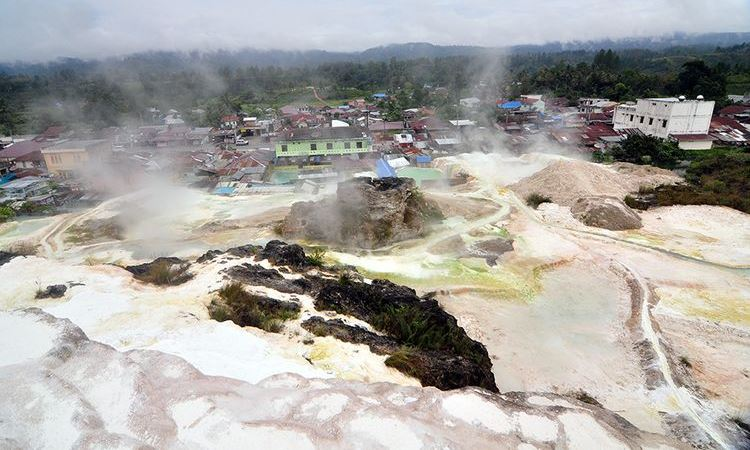

Kabupaten Tapanuli Utara
Tapanuli Utara merupakan kabupaten yang berada di Sumatera Utara. Provinsi ini memang memiliki kekayaan alam yang sudah diragukan lagi, begitupun dengan keaneka ragaman wisata yang ada di daerah tersebut. Berikut adalah rekomendasi tempat wisata yang bisa Anda datangi jika berkesempatan ke Tapanuli Utara.
Pemandian Air Panas Sipoholon
Image Credit:Travel.kompas.com
Bagi anda yang tinggal di Sumatera Utara, tepatnya di Tapanuli Utara, dapat menemukan berbagai jenis
wisata, dan salah
satu tempat wisata alam yang tidak boleh dilewatkan, yaitu Pemandian Alam Air Panas
Sipoholon.
Sesampainya di sana mata anda akan dimanjakan dengan panorama eksotik nan elok
dari bukit-bukit batu kapur yang
menghiasi tempat pemandian ini. Karena terekspos dengan air terus menerus, beberapa sisi dari bukit
bebatuan kapur di
sana berwarna hijau, sangat kontras sekali dengan warna batu kapur tersebut.
Lokasi
Lokasi:Situmeang Habinsaran, Kec. Sipoholon, Kab. Tapanuli Utara.
Pemandian Air Soda Parbubu

Image Credit:tempatwisata.pro
Pemandian satu ini memang cukup berbeda dengan pemandian air panas lain yang ada di Tapanuli Utara, pasalnya pemandian air soda hanya ada 2 di dunia. Satu ada di Venezuela, satu lagi berada di Desa Parbubu. Jadi jika Anda ingin merasakan sensasi kolam air soda tak perlu jauh-jauh ke Venezuela ya.
Lokasi
Lokasi:Parbubu 1, Kec. Tarutung, Kab. Tapanuli Utara.
Salib Kasih
Image Credit:wikipedia.org
Tempat itu menjadi obyek wisata rohani Kristiani di kawasan Tapanuli Utara, diminati dan ramai
dikunjungi wisatawan
mancanegara maupun wisata lokal terutama pada hari Raya Kristani, seperti Natal atau
Paskah.
Salib Kasih yang terletak di Siatas Barita adalah tempat yang dibangun untuk
mengenang jasa missionaris agama Kristen
yang berasal dari Jerman, DR.Ingwer Ludwig Nommensen yang wafat 23 Mei 1918 dan dimakamkan di desa
Sigumpar sekitar 60
kilometer sebelah utara Tarutung.
Di lokasi wisata salib terdapat beberapa rumah doa, wahana
selfie, tempat penjualan souvenir tentang Salib Kasih, parkir
yang luas, rumah makan, dan beberapa fasilitas lainnya.
Lokasi
Lokasi:Dolok, Kec. Siatas Barita, Kab. Tapanuli Utara.